6 Self-Sizing Views¶
Like iOS devices, today’s content shows up in more shapes and sizes than ever before, which poses a layout challenge for many apps. To account for dynamic content, developers need views with self-sizing capabilities. Whether you’re reading your messages, browsing through your photo albums, or choosing your preferred font size, the content you receive can vary significantly in size.
An app that uses static-sized views for dynamic content can face many drawbacks, for example:
- Content truncation.
- Inefficiency in screen space utilization.
- Inability to support user interface preferences.
Drawbacks like the ones above can drive countless users away from your app due to a poor user experience. With self-sizing views, you can address these problems, but first, you need to understand how they work. Often we think of Auto Layout from the top down. A full-screen view controller dictates the size of its view. Then, if you start creating constraints to it, you build the Auto Layout system from the top down. But there’s another option: You can create constraints on the child views and then from those views to their superviews. There’s no real difference in the type of constraints, it’s just a different way of thinking about them.
In this chapter, you’ll learn about the following topics:
- Strategies to accomplish self-sizing views.
- Sizing views with the bottom-to-top in a view hierarchy approach.
- Dynamic sizing of table view cells.
- Sizing views with the top-to-bottom in a view hierarchy approach.
- Manually sizing collection view cells.
By the end of this chapter, you’ll know how to prepare your app’s user interface to consume and display virtually any content.
Accomplishing self-sizing views¶
Usually, a self-sizing view has a position determined by outside constraints or its parent view. This type of setup leaves two metrics for the view to determine: width and height. In some cases, like with a table view cell, the width is also determined by the parent, leaving only the height. Essentially, a self-sizing view acts as a container view for the views within itself. As long as the container view can figure out its size definitively, it can self-size.
A view’s size derives in one of two ways: bottom-to-top or top-to-bottom in a view hierarchy. A view either gets its size from the container view, or the view is the container view and gets its size from its child views. Look at the following diagram:
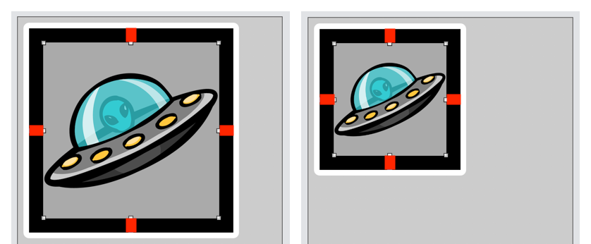
Both container views (black background) encapsulate an image view. Both image views contain the same image and have identical standard spacing Auto Layout constraints (indicated in red lines) around the edges.
However, the left container view is bigger than the right container view.
Look at the container view’s constraints:
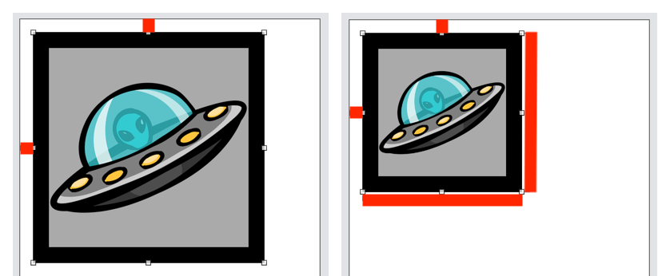
Both container views have leading and top edge constraints. However, only the right container view has a set of width and height constraints.
If a container view contains child views with intrinsic size, it’ll grow and shrink to accommodate those views while taking Auto Layout constraints, such as the padding around the child views, into account. In this case, an inside-out or bottom-to-top approach to the view hierarchy gives the container view its size.
On the other hand, if a container view has a fixed width and/or height, then the child views will grow and shrink to accommodate the container view’s size constraints. In this case, an outside-in or top-to-bottom approach to the view hierarchy gives the child views their size.
For example, think of a table view. If the table view sets a fixed row height, like 50 points, then the row size is going to be 50 points high, no matter what the size of its children. If there are less than 50 points of content, there will be extra whitespace in that row. And if another row has more than 50 points of content, it will be clipped or shrunk to fit within 50 points. But, if you don’t set an explicit row height and let the cells self-size, the rows that have less content will be smaller, and the rows with more content will grow to show all the content.
You’ll want to use the inside-out or bottom-to-top in the view hierarchy approach to give the container view its size. Let the container view derive its width and height from its children and Auto Layout. The child views must interconnect in a way with Auto Layout that pushes and pulls the container view outward or inward and grows or shrinks the container view. Consequently, the views within give shape to the container view.
What you’ve seen here with the child views giving shape to the container view is analogous to self-sizing UITableViewCell and UICollectionViewCell. In this chapter, you’ll learn about the bottom-to-top approach to size a UITableViewCell. In contrast, you’ll also learn about the top-to-bottom approach to size a UICollectionViewCell.
If self-sizing UICollectionViewCell using the bottom-to-top approach interests you, read Chapter 11, “Dynamic Type.”
Table views¶
In the previous chapter, you saw how you could use a scroll view to create an interface that goes beyond the physical size of the screen. But scroll views aren’t the only views at your disposal in iOS. There’s another convenient tool available for when you need to display lists of elements in an organized and user-friendly way. These views are known as table views.
A table view is a view that displays information using a single column. It’s one of the most common objects you’ll see in iOS because it’s an intuitive and useful way for users to view and interact with data. Usually, when you need to display a list of data, table views are the first types of views to come to mind. They’re relatively easy to implement, and they come with a set of methods and properties out-of-the-box, making them a great choice.
To use table views, you first need to know about two protocols: UITableViewDelegateand UITableViewDataSource. The first protocol, UITableViewDelegate, handles things like what to do when a user taps a specific cell. UITableViewDataSource, on the other hand, contains the methods you can use to show the data for each of a table view’s cells.
In this section, you’ll modify the UI for a messaging app using UITableView; however, it’s not that simple because the content of the cells can vary in size, so they need to grow accordingly. But don’t worry, with the power of Auto Layout and self-sizing table view cells, you’ll be able to get things working in no time. This section will demonstrate sizing views using the bottom-to-top in a view hierarchy approach.
Self-sizing table view cells¶
Open the table view’s starter project. Build and run.
The app consists of a simple table view controller containing a set of messages.
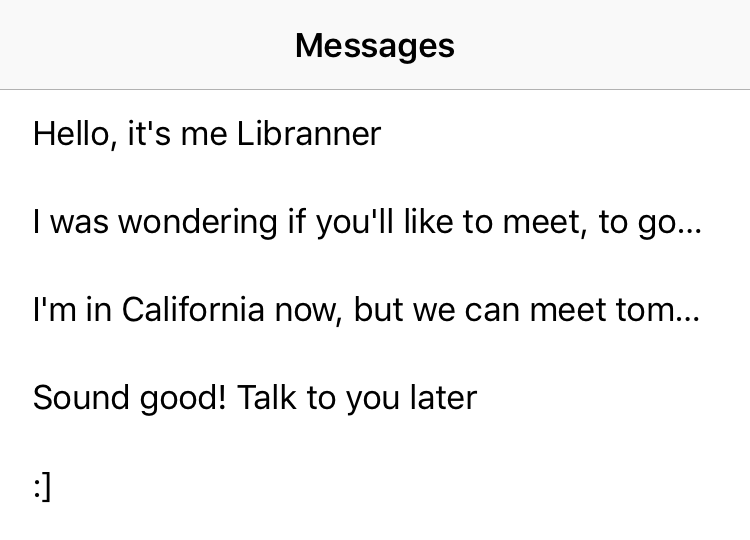
At first glance, the app doesn’t look that great because:
- The text is getting cut off because the cells don’t resize based on their content.
- The app doesn’t resemble a typical chat app.
- There’s no way to differentiate the participants.
To solve the first issue, you need cells that adapt their size based on their content. Before Auto Layout, you may have made some manual calculations and used tableView(_:heightForRowAt:) to provide the height for each cell. But with Auto Layout and self-sizing table view cells, you don’t need to do that anymore.
Stop the app so you can get to work.
To use self-sizing cells, you need to follow three simple rules:
- Set the table view’s
rowHeighttoUITableView.automaticDimension. - Set the table view’s
estimatedRowHeightto the value you want or do the same by implementing the height estimation delegate method.
Note
The default value for estimatedRowHeight is automaticDimension, meaning the table view will set an estimated value for you. That makes setting the estimated row height optional, but it’s good to implement it when you have an idea of what the cell height should be. Try to be as accurate as possible, because it’s used by the system to calculate things like the scroll bar height.
- Use Auto Layout for the UI elements inside of the cells. Keep in mind that you have to create the constraints within the content view of the table view cell. It’s also mandatory to have an unbroken chain of constraints for this to work.
Open MessagesTableViewController.swift, and inside configureTableView(), add the following code at the bottom:
tableView.rowHeight = UITableView.automaticDimension
This satisfies Step #1 above.
On tableView(_:cellForRowAt:), look at how the cell is instantiated:
override func tableView(
_ tableView: UITableView,
cellForRowAt indexPath: IndexPath
) -> UITableViewCell {
let message = messages[indexPath.row]
//1
var cell: MessageBubbleTableViewCell
if message.sentByMe {
cell = tableView.dequeueReusableCell(
withIdentifier: MessageBubbleCellType.rightText.rawValue,
for: indexPath) as! RightMessageBubbleTableViewCell
} else {
cell = tableView.dequeueReusableCell(
withIdentifier: MessageBubbleCellType.leftText.rawValue,
for: indexPath) as! LeftMessageBubbleTableViewCell
}
//2
cell.textLabel?.text = message.text
return cell
}
With this code, you:
- Use an
ifstatement to decide whether the cell should be an instance ofRightMessageBubbleTableViewCellorLeftMessageBubbleTableViewCellbased on the value ofmessage.sentByMe. - Set the text property of
textLabelwith the value ofmessage.text.
To customize the cell, you can use tableView(_:cellForRowAt:).
First, in tableView(_:cellForRowAt:), replace cell.textLabel?.text = message.text with cell.messageLabel.text = message.text. This property is part of the custom implementation based on MessageBubbleTableViewCell.
Next, you need to create the constraints between the content and the container view. Go to MessageBubbleTableViewCell.swift and uncomment the commented code inside of configureLayout():
func configureLayout() {
contentView.addSubview(messageLabel)
NSLayoutConstraint.activate([
messageLabel.topAnchor.constraint(
equalTo: contentView.topAnchor,
constant: 10),
messageLabel.rightAnchor.constraint(
equalTo: contentView.rightAnchor,
constant: -10),
messageLabel.bottomAnchor.constraint(
equalTo: contentView.bottomAnchor,
constant: -10),
messageLabel.leftAnchor.constraint(
equalTo: contentView.leftAnchor,
constant: 10)
])
}
This code adds the messageLabel to the content view and sets up the constraints so that the label gets displayed correctly. One important thing to notice here is that you add elements to contentView rather than directly to the view itself. You should always do this when the content view is the default superview displayed by the cell. For example, if you want to implement edit mode, using the content view will allow the cell to transition gracefully from one state to the other.
Build and run.
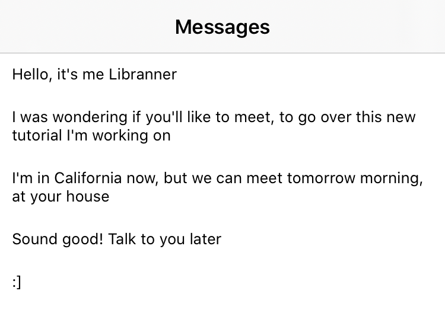
You’ve sized the content view using the bottom-to-top in a view hierarchy approach. The views within the content view determines the height of the content view.
The app still doesn’t look quite right, but at least now all of the text is visible. In the next section, you’ll improve the UI further to make it look more like a typical chat app.
Implementing self-sizing cells¶
To give this app a standard-looking chat app appearance, you’ll place the messages inside chat bubbles and make them look different for each user.
Go to MessageBubbleTableViewCell.swift, which is inside Views, and remove all of the code in configureLayout() except for the first line. After that, add the following above the first line:
contentView.addSubview(bubbleImageView)
This line of code adds a previously customized image view that will contain the bubble image.
When you’re done, the function will look like this:
func configureLayout() {
contentView.addSubview(bubbleImageView)
contentView.addSubview(messageLabel)
}
In the messageLabel property initializer, change the textColor so that it contrasts better with the background:
lazy var messageLabel: UILabel = {
let messageLabel = UILabel(frame: .zero)
messageLabel.textColor = .white
...
}()
Open LeftMessageBubbleTableViewCell.swift, and inside configureLayout(), after super.configureLayout(), add the following block of code:
NSLayoutConstraint.activate([
//1
contentView.topAnchor.constraint(
equalTo: bubbleImageView.topAnchor,
constant: -10),
contentView.trailingAnchor.constraint(
greaterThanOrEqualTo: bubbleImageView.trailingAnchor,
constant: 20),
contentView.bottomAnchor.constraint(
equalTo: bubbleImageView.bottomAnchor,
constant: 10),
contentView.leadingAnchor.constraint(
equalTo: bubbleImageView.leadingAnchor,
constant: -20),
//2
bubbleImageView.topAnchor.constraint(
equalTo: messageLabel.topAnchor,
constant: -5),
bubbleImageView.trailingAnchor.constraint(
equalTo: messageLabel.trailingAnchor,
constant: 10),
bubbleImageView.bottomAnchor.constraint(
equalTo: messageLabel.bottomAnchor,
constant: 5),
bubbleImageView.leadingAnchor.constraint(
equalTo: messageLabel.leadingAnchor,
constant: -20)
])
//3
let insets = UIEdgeInsets(
top: 0,
left: 20,
bottom: 0,
right: 10)
//4
let image = UIImage(named: blueBubbleImageName)!
.imageFlippedForRightToLeftLayoutDirection()
//5
bubbleImageView.image = image.resizableImage(
withCapInsets: insets,
resizingMode: .stretch)
With this code, you:
- Create top, trailing, bottom and leading constraints for
contentView. This will guarantee that the content changes its size depending on the dimensions ofbubbleImageView. - Create top, trailing, bottom and leading constraints for
bubbleImageView. This will apply some padding betweenbubbleImageViewandmessageLabel. It will also makebubbleImageViewadapt its size according to the amount of text. - Create an
UIEdgeInsets. The insets are necessary so that the chat bubble has the proper padding. - Get the corresponding image and call
imageFlippedForRightToLeftLayoutDirection()to make sure the image is correct in both left-to-right and right-to-left languages. - Apply the insets to the image, set the resizing mode to stretch and assign the result to the image property of
bubbleImageView. This code is what makes it possible to have bubbles with different sizes without affecting the quality of the image.
One important thing to notice is the trailing constraint contentView.trailingAnchor.constraint(greaterThanOrEqualTo: bubbleImageView.trailingAnchor, constant: 20). Since this constraint uses the greaterThanOrEqualTo relation, the view can grow horizontally, while always keeping at least a 20 point margin from its container.
Build and run.
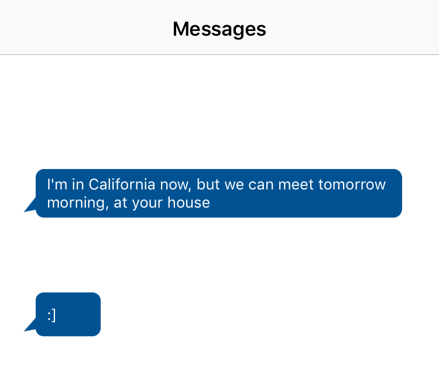
All done for the left bubble, which will contain the message sent by the other user. You’re ready to set up the right bubble, which will be the messages sent by you.
Open RightMessageBubbleTableViewCell.swift, and in configureLayout(), after super.configureLayout(), add the following block of code:
NSLayoutConstraint.activate([
contentView.topAnchor.constraint(
equalTo: bubbleImageView.topAnchor,
constant: -10),
contentView.trailingAnchor.constraint(
equalTo: bubbleImageView.trailingAnchor,
constant: 20),
contentView.bottomAnchor.constraint(
equalTo: bubbleImageView.bottomAnchor,
constant: 10),
//1
contentView.leadingAnchor.constraint(
lessThanOrEqualTo: bubbleImageView.leadingAnchor,
constant: -20),
//2
bubbleImageView.topAnchor.constraint(
equalTo: messageLabel.topAnchor,
constant: -5),
bubbleImageView.trailingAnchor.constraint(
equalTo: messageLabel.trailingAnchor,
constant: 20),
bubbleImageView.bottomAnchor.constraint(
equalTo: messageLabel.bottomAnchor, constant: 5),
bubbleImageView.leadingAnchor.constraint(
equalTo: messageLabel.leadingAnchor,
constant: -10)
])
//3
let insets = UIEdgeInsets(
top: 0,
left: 10,
bottom: 0,
right: 20)
//4
let image = UIImage(named: greenBubbleImageName)!
.imageFlippedForRightToLeftLayoutDirection()
//5
bubbleImageView.image = image.resizableImage(
withCapInsets: insets,
resizingMode: .stretch)
This method looks similar to the one you wrote for the left bubble with some important changes:
- The relation used for the leading anchor is
lessThanOrEqualTo, as this view should align to the right. It grows horizontally from right-to-left, adding a margin of 20 on the leading side. - All of the other constraints are similar; however, the bubble needs to align to the right, so some of the values regarding leading and trailing anchors are switched.
- Create an
UIEdgeInsets. The insets are necessary so that the chat bubble has the proper padding. - Get the corresponding image and call
imageFlippedForRightToLeftLayoutDirection()to make sure the image is correct in both left-to-right and right-to-left languages. - Apply the insets to the image, set the resizing mode to stretch and assign the result to the image property of
bubbleImageView. This code is what makes it possible to have bubbles with different sizes without affecting the quality of the image.
Build and run.
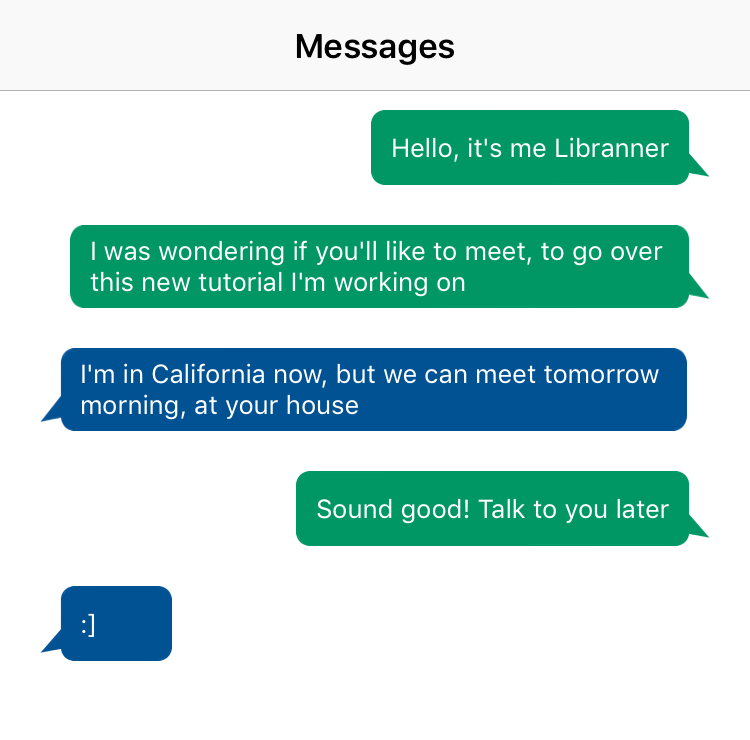
Everything looks great! You were able to create a nice-looking chat app, and the cells adapt to their content. With self-sizing table view cells, you can build interfaces that respond well to different types of content.
Exercise: Modify the cell so that it can display images and text. For this exercise, modify the cell so that it can display images and text. The
imageNameproperty on theMessagemodel contains the image name; to make it easier, the images are part of the bundle. Give it a try, and afterward, check the challenge project to see how you did.
Collection View¶
UITableView presents a list of rows in a single column. You’d typically want to choose table views for row layouts. Table views can benefit you with an easy to setup layout process. You can get them up and running in almost no time. As amazing as table views are, they do fall short when you want to support layouts beyond a single-column layout.
Whenever there’s a list of items you want to present, it’s a good idea to start and see if table views can do the job. If not, then look into UICollectionView. When it comes to layout possibilities, the sky is the limit with collection views.
Here are some layouts, which table views will have a hard time achieving, but not for collection views:
Say you want any of these layouts:
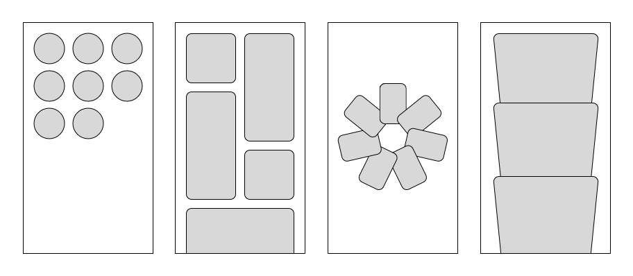
Table views will have a hard time or not be able to achieve the layouts above. UICollectionView, on the other hand, is more fit to handle the layouts above with greater ease.
With UICollectionView, you can present a list with more layout possibilities.
In this section, you’ll learn about the following UICollectionView topics:
- Why collection views are useful.
- Collection view anatomy.
- Setting up a collection view with flow layout.
- Working with
UICollectionViewDataSource. - Manually sizing collection view cells.
- Working with
UICollectionViewDelegate. - Working with
UICollectionViewDelegateFlowLayout. - Working with reusable supplementary views.
- Handling an app’s change in orientation and cell layout.
To help focus on the layout code that makes up a collection view, you’ll implement one programmatically. After doing so, you’ll have a solid foundation on how to set up a collection view. More importantly, you’ll be able to better understand the layout possibilities collection views have to offer. Contrasting to the table view section, this section will demonstrate sizing views using the top-to-bottom in a view hierarchy approach.
Why collection view?¶
A collection view is one of the most feature-rich layout tools in the UIKit framework. A collection view can display a list of items in almost any layout imaginable. Collection views come to mind usually when a table view doesn’t offer the more complex layout features. In other words, whenever you intend your list to present layout in ways different than rows, a collection view is often the hero to save the day.
Some features available in a collection view but not in a table view are:
- Presenting a list in a grid layout.
- Scrolling a list in the horizontal direction.
- Sizing a cell’s width and height.
- Built-in interactive animations (insert, delete or reorder items).
UICollectionView opens you up to a vast world of layout possibilities. You have greater layout flexibility than UITableView with UICollectionView. For this reason alone, it’s well worth the time investment for UICollectionView mastery.
Collection views excel at grid layout. You can find apps with grid layout throughout the App Store nowadays. You have apps such as App Store, Photos, Instagram, Pinterest, Netflix, Airbnb and many more that implement a grid layout.
Collection view anatomy¶
To build out a collection view, there are four basic components you need to know about to get started:
- UICollectionViewLayout: Every collection view requires a layout object.
UICollectionViewLayoutdecides how the items inside a collection view position and look. You can find yourself dealing with items such as collection view cell, supplementary view, and decoration view. - UICollectionViewCell: This is similar to
UITableViewCell; however, it has greater layout flexibility. In addition to a configurable cell height, you can configure a collection view cell’s width. - Supplementary View: You can use supplementary views to present headers and footer views in a collection view.
- Decoration View: Unlike a collection view cell and supplementary view, a decoration view’s presentation is independent of the collection view’s data source. Decoration views act solely as visual adornments for a section or the entire collection view. You typically won’t need to make use of decoration views.
In a collection view, you’ll find that UICollectionViewLayout and UICollectionViewCell are required to populate the collection view. Supplementary and decoration views are optional items.
To organize items into a grid, you’d typically use a concrete layout object that comes with UIKit, UICollectionViewFlowLayout, so you won’t need to implement the details for positioning each item within a collection view. UICollectionViewFlowLayout is a subclass of UICollectionViewLayout made to organize items into a grid.
Subclass your own UICollectionViewLayout when you want a layout that’s different than a grid layout like a circular layout or when you want finer control over the layout details. In those scenarios, you may want to create a layout object that subclasses UICollectionViewLayout. Otherwise, make use of UICollectionViewFlowLayout to avoid reinventing the wheel.
This chapter makes use of UICollectionViewFlowLayout instead of subclassing UICollectionViewLayout and, because you won’t be creating a custom layout class, the chapter will omit the use of decoration views.
All right, time to get your hands dirty with collection views.
Building mini-story view¶
In many social media apps, you’ll find story sharing features. The stories contain events shared within the last 24 hours. You can find the story sharing features in apps such as Snapchat, Messenger and Instagram.
The mini-story view you build will contain user stories. Each story will come in the shape of a circle. The mini-story view will also be scrollable in the horizontal direction.
Setting up collection view properties¶
Open the collection view’s starter project. Build and run.
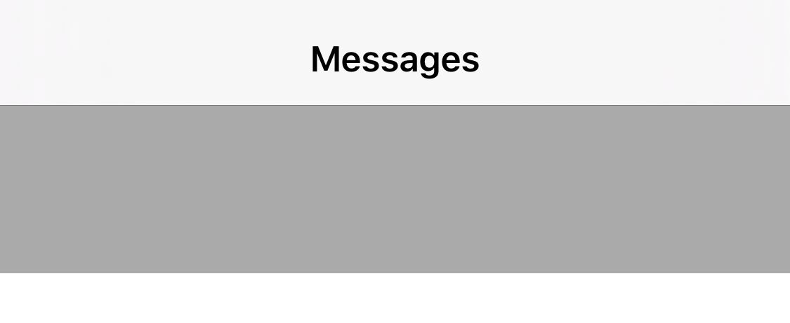
You have a view controller with a MiniStoryView. The MiniStoryView contains an empty collection view at the moment.
Your goal is to build out the mini-story view with a collection view inside, and achieve the following layout:
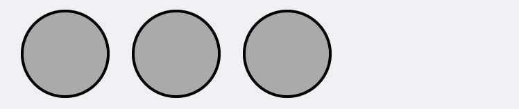
To begin, in User Story/Views, open MiniStoryView.swift. Add the following properties:
// 1
private let verticalInset: CGFloat = 8
private let horizontalInset: CGFloat = 16
// 2
private lazy var flowLayout: UICollectionViewFlowLayout = {
let flowLayout = UICollectionViewFlowLayout()
flowLayout.minimumLineSpacing = 16
flowLayout.scrollDirection = .horizontal
flowLayout.sectionInset = UIEdgeInsets(
top: verticalInset,
left: horizontalInset,
bottom: verticalInset,
right: horizontalInset)
return flowLayout
}()
// 3
private lazy var collectionView: UICollectionView = {
let collectionView = UICollectionView(
frame: .zero,
collectionViewLayout: flowLayout)
collectionView.register(
MiniStoryCollectionViewCell.self,
forCellWithReuseIdentifier: cellIdentifier)
collectionView.showsHorizontalScrollIndicator = false
collectionView.alwaysBounceHorizontal = true
collectionView.backgroundColor = .systemGroupedBackground
collectionView.dataSource = self
collectionView.delegate = self
return collectionView
}()
The code above defines some properties to set up a collection view. Here’s a closer look:
- Create two constants. The vertical inset provides the collection view with a top and bottom content insets of 8 points spacing. Similarly, the horizontal inset provides the collection view with a left and right content insets of 16 points spacing.
- Lazily load the collection view flow layout to utilize
verticalInsetandhorizontalInset. You specify the line spacing between cells and the scroll direction to horizontal. Also, you set the section inset with inset properties you’ve created earlier and some user interface properties. - Initialize a collection view with
flowLayout, configure user interface properties, set the data source and set the delegate.
You’re off to a great start, but there are more steps involved to get your collection view looking better.
Creating Auto Layout constraint extensions¶
In your project, you can abstract commonly used code into a helper method. Also, extensions allow you to add additional functionalities to existing code.
Under App/Extensions, create a Swift file named UIView+Constraints.swift. Then, add the following code to the file:
import UIKit
extension UIView {
func fillSuperview(withConstant constant: CGFloat = 0) {
guard let superview = superview else { return }
translatesAutoresizingMaskIntoConstraints = false
NSLayoutConstraint.activate(
[leadingAnchor.constraint(
equalTo: superview.leadingAnchor,
constant: constant),
topAnchor.constraint(
equalTo: superview.topAnchor,
constant: constant),
trailingAnchor.constraint(
equalTo: superview.trailingAnchor,
constant: -constant),
bottomAnchor.constraint(
equalTo: superview.bottomAnchor,
constant: -constant)]
)
}
}
fillSuperview(withConstant:) is accessible to every UIView in the project. In many scenarios, you’d want a view to fill out the superview. Instead of having to write almost identical code over and over again, you can create an extension like you did. Then, create a helper method to reduce the number of lines of code. The constant parameter is there for when you want to add spacing to leading, trailing, top, and bottom anchors. Its default value is 0.
Adding collection view constraints¶
Now, add the following code to setupCollectionView() in MiniStoryView:
addSubview(collectionView)
collectionView.fillSuperview()
With this code, you add a collection view to the view’s subview and then, set up the Auto Layout constraints.
Manually sizing collection view cells¶
There are two ways to determine a collection view cell size. Although you can size collection view cells manually or automatically, this section focuses on ways to manually size collection view cells.
You can define the collection view cell size using flowLayout and setting its itemSize.
Add the following code to MiniStoryView:
override func layoutSubviews() {
super.layoutSubviews()
let height = collectionView.frame.height - verticalInset * 2
let width = height
let itemSize = CGSize(width: width, height: height)
flowLayout.itemSize = itemSize
}
The logic here is straightforward. The collection view cell’s height equals the collection view frame’s height minus the top and bottom insets. The cell width equals to height. You create a CGSize object with the width and height values you declared earlier and pass the size as the flow layout’s item size. You set the flowLayout item size here because you want to use the collection view frame height only after the collection view lays out.
With the implementation from above, you have cells with equal width and height.
Build and run, and you’ll see your collection view and collection view cells.
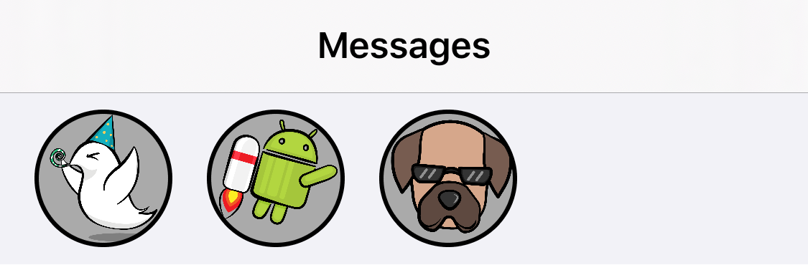
You’ve sized the content view’s child views using the top-to-bottom in a view hierarchy approach. The content view determines the size of the child views.
You’ve covered quite a number of collection view components. Yet, it’s still the tip of the iceberg for what’s possible. The fundamentals are what you’ll use to create complex systems. Helping you see different ways in which collection views are utilized can give you ideas on how to create different layouts.
Earlier, the chapter mentions that you can have almost any layout you can imagine. Time to give collection view cells the Super Mario mega-mushroom and go bigger with collection view cells. Along the way, you’ll pick up on skills on building out collection views.
Building user story view controller’s collection view¶
Now, you’ll build out the collection view to display the user stories. You can see a user’s stories by tapping on a MiniStoryCollectionViewCell in the MessagesViewController. You’ll work with the collection view’s UICollectionViewDelegateFlowLayout, reusable supplementary views and handle app orientation transitions.
Working with UICollectionViewDelegateFlowLayout¶
Earlier, you’ve learned to set the collection view item size, content insets, and line spacings with the collection view flow layout properties. Now, you’ll learn to implement the collection view item size and content insets by implementing UICollectionViewDelegateFlowLayout’s methods.
Add the following code to the end of UserStoryViewController.swift:
// MARK: - UICollectionViewDelegateFlowLayout
extension UserStoryViewController:
UICollectionViewDelegateFlowLayout {
// 1
func collectionView(
_ collectionView: UICollectionView,
layout collectionViewLayout: UICollectionViewLayout,
sizeForItemAt indexPath: IndexPath
) -> CGSize {
return collectionView.frame.size
}
// 2
func collectionView(
_ collectionView: UICollectionView,
layout collectionViewLayout: UICollectionViewLayout,
insetForSectionAt section: Int
) -> UIEdgeInsets {
return .zero
}
// 3
func collectionView(
_ collectionView: UICollectionView,
layout collectionViewLayout: UICollectionViewLayout,
minimumLineSpacingForSectionAt section: Int
) -> CGFloat {
return 0
}
}
Here’s what’s happening with this code:
- The method asks for the item size. You return the collection view frame size.
- The method asks for the content inset. You return zero for left, right, top, and bottom content insets with
.zero. - The method asks for the minimum line spacing. You return zero to have no spacing between items.
Add the following code to collectionView’s initializer right before returning collectionView:
collectionView.delegate = self
This sets the collection view’s delegate to UserStoryViewController, and the UICollectionViewDelegateFlowLayout methods will take part in shaping the cells.
If you take a look inside collectionView’s closure, you’ll see that isPagingEnabled is set to true. When this property is true, the collection view scrolls and stops on multiples of the scroll view’s bounds.
Build and run, then tap a story. UserStoryViewController will have collection view cells filling the screen.
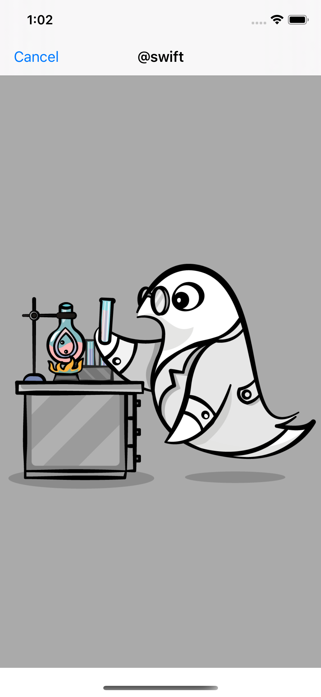
When you end scrolling on the collection view, you’ll see the cells alway have its edges filling the screen.
Working with reusable supplementary views¶
Now, your goal is to implement a header view in the collection view. Open HeaderCollectionReusableView.swift inside of User Story/Views. Add the following code to the setupStackView():
addSubview(stackView)
stackView.fillSuperview()
NSLayoutConstraint.activate(
[topSpacerView.heightAnchor.constraint(
equalTo: bottomSpacerView.heightAnchor)]
)
Here, you make stackView fill the superview with the Auto Layout constructor helper method. And, you set the top and bottom spacer views to have equal heights.
Open UserStoryViewController.swift. Add the following code to collectionView’s closure right before returning collectionView:
collectionView.register(
HeaderCollectionReusableView.self,
forSupplementaryViewOfKind:
UICollectionView.elementKindSectionHeader,
withReuseIdentifier: headerViewIdentifier)
Here’s what you’ve done with the code above. Collection view registers HeaderCollectionReusableView as a section header. The process of registering and dequeuing UICollectionReusableView is similar to that of a UICollectionViewCell.
Inside the UICollectionViewDataSource extension section, add the following code:
// 1
func collectionView(
_ collectionView: UICollectionView,
viewForSupplementaryElementOfKind kind: String,
at indexPath: IndexPath
) -> UICollectionReusableView {
// 2
guard let headerView = collectionView
.dequeueReusableSupplementaryView(
ofKind: UICollectionView.elementKindSectionHeader,
withReuseIdentifier: headerViewIdentifier,
for: indexPath) as? HeaderCollectionReusableView
else { fatalError("Dequeued unregistered reusable view") }
// 3
headerView.configureCell(username: userStory.username)
return headerView
}
With the code above, you:
- Implement a
UICollectionViewDataSource’s method that determines what supplementary views are displayed. - Dequeue a
HeaderCollectionReusableViewas a header view using a reusable identifier. - Pass in the user story’s username to the cell for label and image configurations.
Finally, time to set the size of the header view. In the UICollectionViewDelegateFlowLayout extension section, implement the following method:
func collectionView(
_ collectionView: UICollectionView,
layout collectionViewLayout: UICollectionViewLayout,
referenceSizeForHeaderInSection section: Int
) -> CGSize {
return collectionView.frame.size
}
The code above sets the header view size equal to the collection view frame.
Build and run, and you’ll see the following screen when you tap the first collection view cell in MiniStoryView.
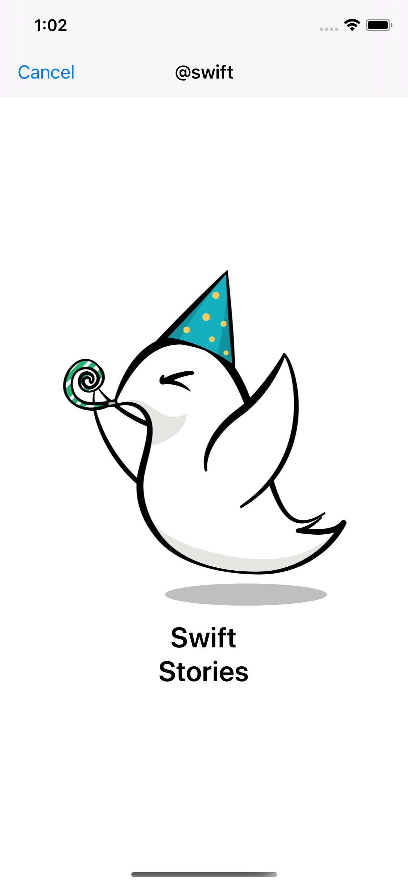
Next, you’ll learn to adapt your collection view layout for when your device changes its orientation.
Handling app orientation transitions¶
Currently, there’s a visual conflict when UserStoryViewController is present and the device rotates. To see the visual conflict, build and run. Tap a user story. With a UserStoryViewController in view, scroll to the second collection view cell. Rotate the device. You’ll see something like this:
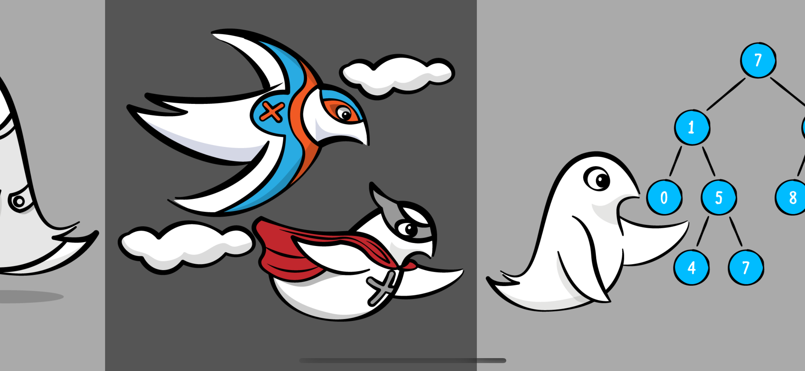
Instead of the screen above, you want to center the cells with no sign of the previous/next cells.
Time to fix this. First, implement the following UIScrollViewDelegate method in UserStoryViewController:
// 1
func scrollViewWillEndDragging(
_ scrollView: UIScrollView,
withVelocity velocity: CGPoint,
targetContentOffset: UnsafeMutablePointer<CGPoint>
) {
let contentOffsetX = targetContentOffset.pointee.x
let scrollViewWidth = scrollView.frame.width
currentItemIndex = Int(contentOffsetX / scrollViewWidth)
}
The code above does the following:
scrollViewWillEndDragging(_:withVelocity:targetContentOffset:), as the method name suggests, is called when the scroll view goes into dragging motion and then ends the dragging motion. For example, a user is scrolling a collection view. When the user stops scrolling, the method gets called. Hence, when you end dragging on a collection view, the method gets called.- Calculate the
currentItemIndexusingtargetContentOffsetand the view’s frame. Once the user ends dragging on the collection view, the collection view stops at a specific position. You also know the x offset value from the original position. You have defined that the scroll view frame width is a multiple of the collection view cell’s frame width. Using this information, you can calculate the current collection view item index by simply dividing the x content offset by the scroll view frame width.
You use currentItemIndex so that the collection view can know the content offset position you want after the device rotates. This helps center the collection view cells after device rotation.
Add the following method to UserStoryViewController:
private func centerCollectionViewContent() {
DispatchQueue.main.async { [weak self] in
guard let self = self else { return }
// 1
let x = self.collectionView.frame.width
* CGFloat(self.currentItemIndex)
let y: CGFloat = 0
let contentOffset = CGPoint(x: x, y: y)
// 2
self.collectionView.setContentOffset(
contentOffset,animated: false)
}
}
You did the following with the code above:
- Calculate the collection view content offset. The content offset for
xtakes the collection view’s frame width and multiplies it by thecurrentItemIndex. The content offset foryis zero, as there’s no need for vertical spacing adjustment. Afterward, you initialize aCGPointnamedcontentOffsetwithxandy. - Set the
collectionView’s content offset equal tocontentOffsetwith animation set tofalse.
To finish off, add the following code to UserStoryViewController:
override func viewWillTransition(
to size: CGSize,
with coordinator: UIViewControllerTransitionCoordinator
) {
super.viewWillTransition(to: size, with: coordinator)
centerCollectionViewContent()
}
When the device rotates, you call centerCollectionViewItem(). This centers the appropriate collection view cell.
Now, upon device rotation, your collection view cell will center itself using the visible collection view cell index prior to rotation.
Build and run, then tap a user story. With UserStoryViewController in view, scroll to the second collection view cell. Rotate the device.
A device that starts in the portrait orientation looks like this:
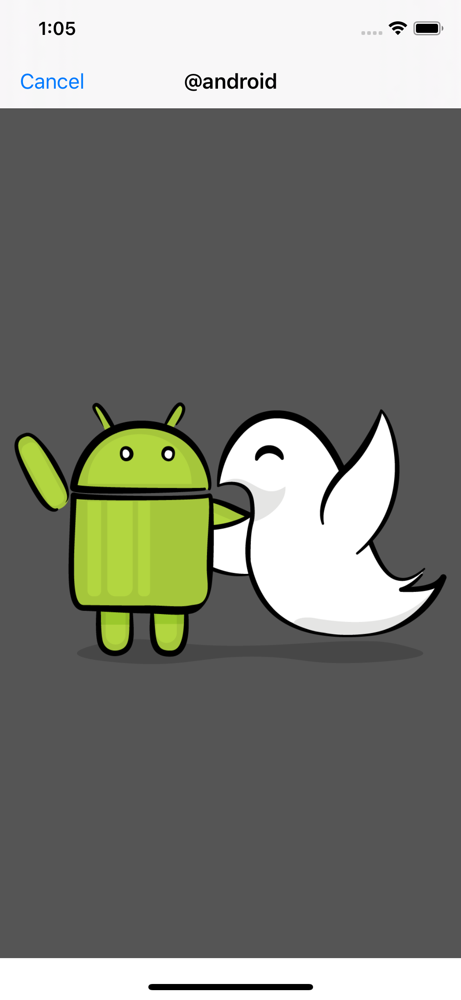
And, looks like this after rotating to the landscape orientation:
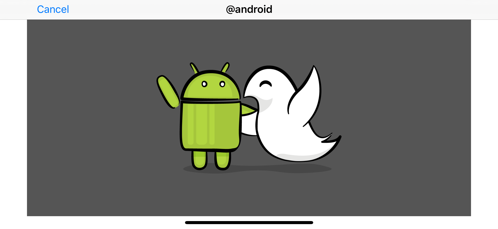
Challenges¶
Using what you’ve learned so far, implement a collection view will the following instructions:
- Create and implement
StoryProgressViewinUserStoryViewController. This view contains a collection view. The number of cells equals to the number of user story events. StoryProgressViewshould only be visible after scrolling past the header view. As an additional challenge, usescrollViewDidScroll(_:)to fadeStoryProgressView’s based on the scroll position. For example, when you scroll, and half of the header view is visible, you should setStoryProgressView’s alpha to0.5.StoryProgressView’s cell highlight should matchUserStoryViewController’scurrentItemIndex. UsescrollViewDidEndDecelerating(_:). For example, with the dog’s stories, if you end scrolling at the last collection view cell item, the story progress view should look like this: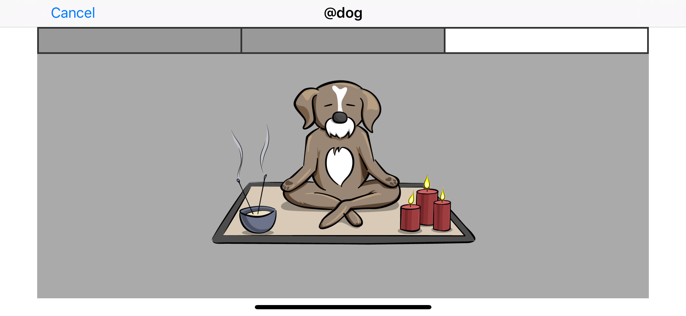- When you tap on a cell in
StoryProgressView, you set the cell to highlight and scrollUserStoryViewController’s collection view to the cell with the matching index. - Implement
StoryProgressView.layoutSubviews()to handle changes in orientation. You can do this by invalidating the flow layout. When you invalidate a layout, you ask the app to re-query the layout information.
That’s it. Go ahead and jump on the challenge. Afterward, review the final project to compare solutions.
Key points¶
- Use self-sizing views for dynamic content.
- When working with self-sizing table view cells, make sure to set
rowHeightof the table view toautomaticDimension. - Be careful while setting the constraints inside of the table view cell. You should create these constraints with the content view, not the cells.
UICollectionViewoffers more layout flexibilities thanUITableView.- A collection view requires a
UICollectionViewLayoutandUICollectionViewCellto populate itself. Supplementary and decoration views are optional items. - Typically, use
UICollectionViewFlowLayoutin the collection view for grid layout. - Subclass
UICollectionViewLayoutfor layout that couldn’t be easily achieved withUICollectionViewFlowLayout. - You can manually or dynamically size a collection view cell or reusable view.
- Set the collection view data source with
UICollectionViewDataSource. - You can size a collection view cell or reusable view by adopting and implementing methods from
UICollectionViewDelegateFlowLayout. - Get notified of collection view events with
UICollectionViewDelegate. - To make your layout look great, you may need to adjust it for the event of device orientation.